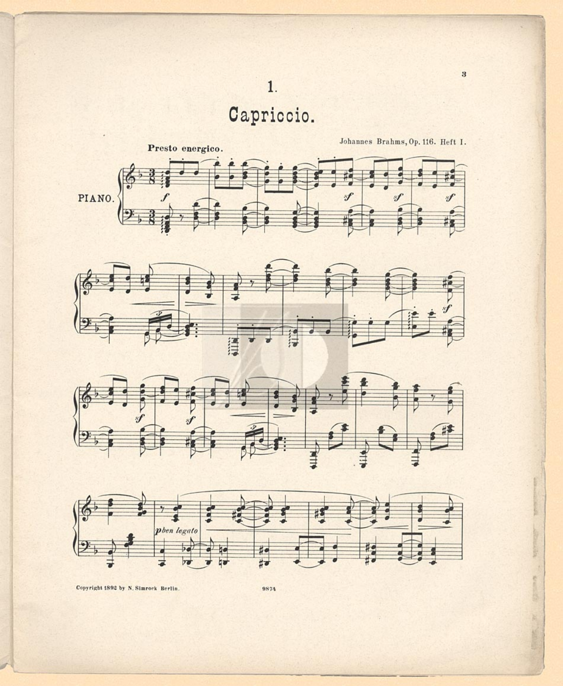
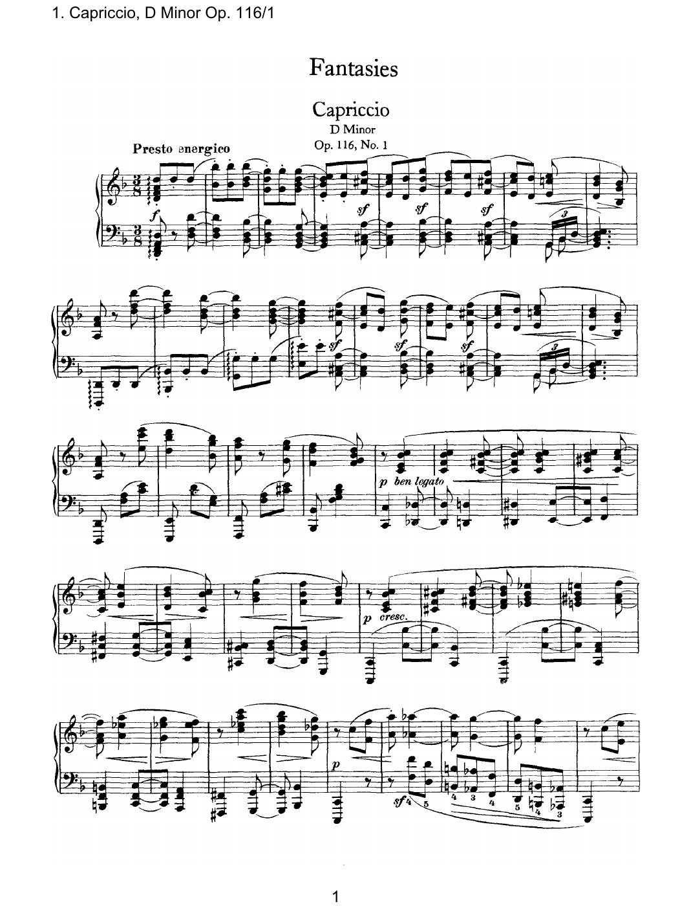
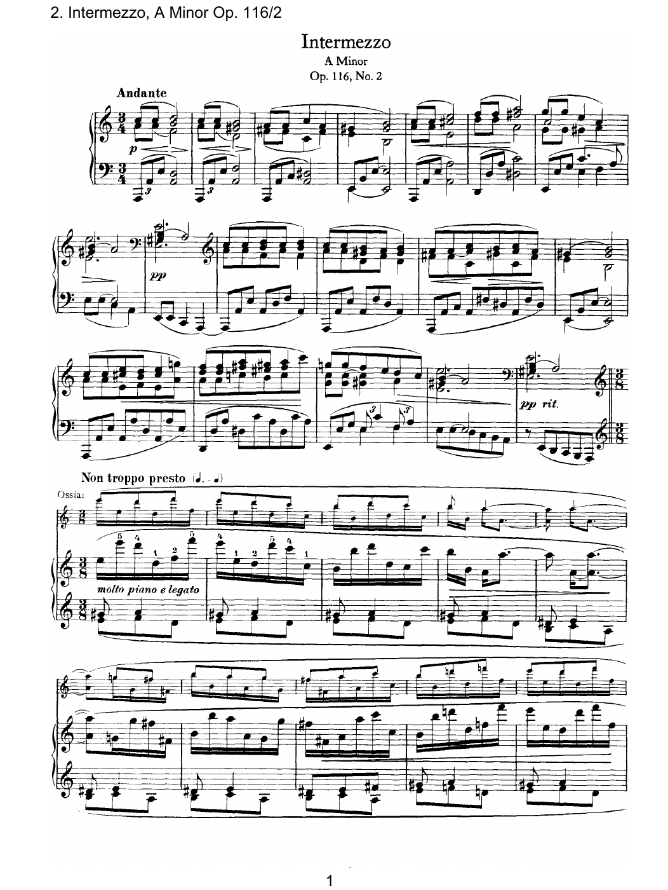
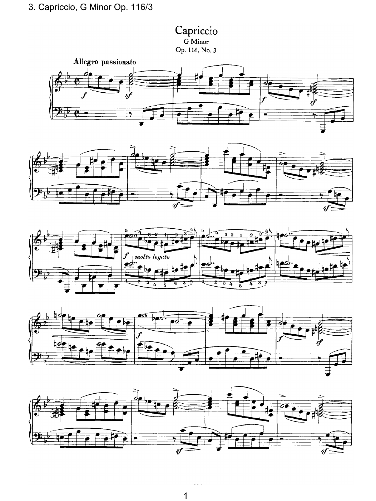
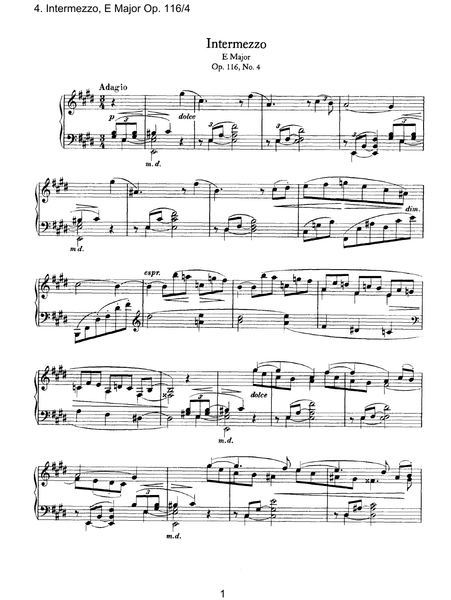
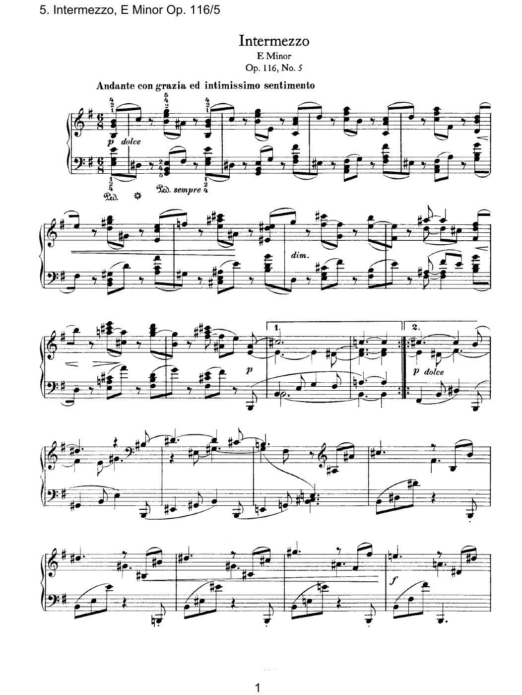
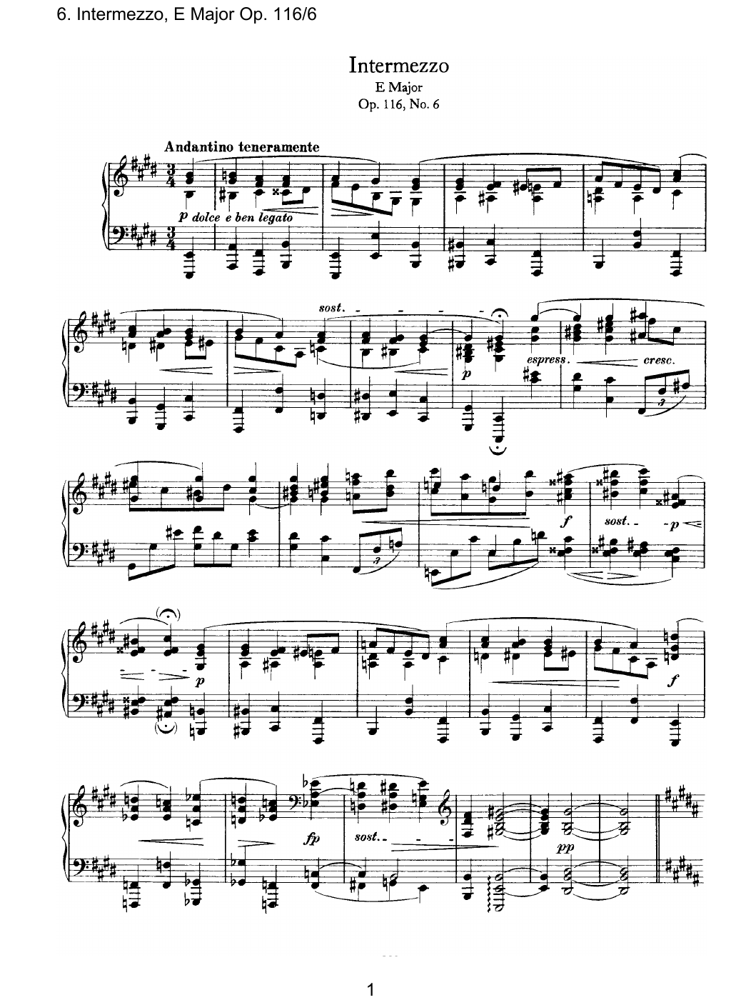
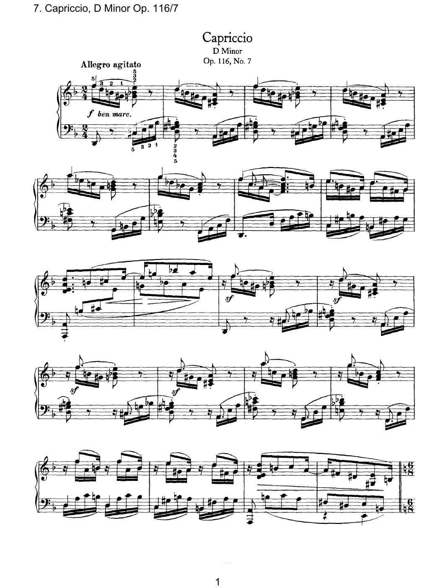
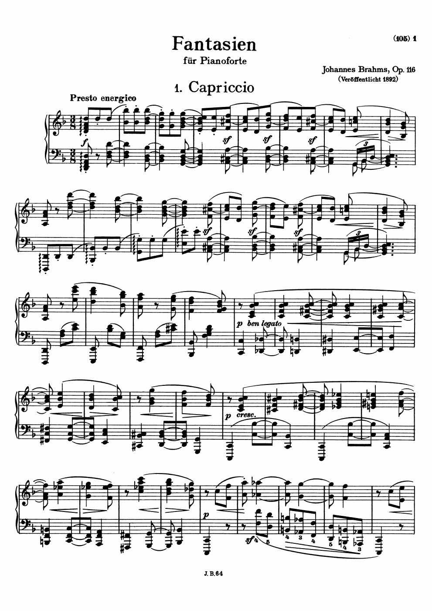
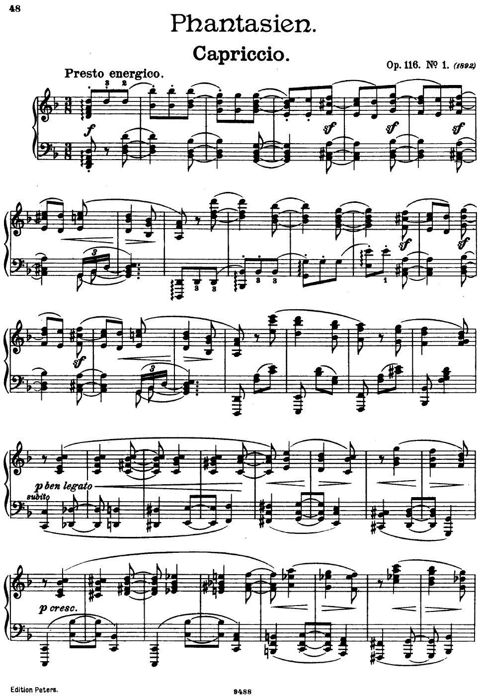

Simrock 首版 · 彩色扫描
40 页 · #23160含两册封面、空白衬页与出版目录；七曲齐全。谱面保留原有数字水印，未去除。封面及版号 9874 / 9875 与来源版本信息相符。
查看首张谱面

本地小批次核对结果 · 仅 Op.116 · 原始 PDF 未改写
单曲命名、调性与中文编制已与谱面核对。首批选择 7 份单曲谱 + 1 份完整原始扫描版（#84692），合计 8 份。
其余 3 份完整版本仅保留在暂存区，未发布或删除；特殊许可的 3 份仍未下载。
编制统一为“钢琴独奏”；无歌词，不显示语言标签。主标题使用单曲名和作品号，所属作品单列。
| 拟用标题 / 所属作品 | 调性 | 类型 | 页数 | 原谱 |
|---|---|---|---|---|
| No. 1 Capriccio. Presto energico, Op. 116 7 Fantasien, Op. 116 | d小调 | 随想曲 | 5 | 打开原始 PDF ↗ 已上线查看首张谱面 |
| No. 2 Intermezzo. Andante, Op. 116 7 Fantasien, Op. 116 | a小调 | 间奏曲 | 3 | 打开原始 PDF ↗ 已上线查看首张谱面 |
| No. 3 Capriccio. Allegro passionato, Op. 116 7 Fantasien, Op. 116 | g小调 | 随想曲 | 4 | 打开原始 PDF ↗ 已上线查看首张谱面 |
| No. 4 Intermezzo. Adagio, Op. 116 7 Fantasien, Op. 116 | E大调 | 间奏曲 | 3 | 打开原始 PDF ↗ 已上线查看首张谱面 |
| No. 5 Intermezzo. Andante con grazia ed intimissimo sentimento, Op. 116 7 Fantasien, Op. 116 | e小调 | 间奏曲 | 2 | 打开原始 PDF ↗ 已上线查看首张谱面 |
| No. 6 Intermezzo. Andantino teneramente, Op. 116 7 Fantasien, Op. 116 | E大调 | 间奏曲 | 3 | 打开原始 PDF ↗ 已上线查看首张谱面 |
| No. 7 Capriccio. Allegro agitato, Op. 116 7 Fantasien, Op. 116 | d小调 | 随想曲 | 4 | 打开原始 PDF ↗ 已上线查看首张谱面 |
完整曲集的调性留空；同一作品的各曲有不同调性。“No.”链接只跳转 PDF 页码，不改写或拆分原文件。
含两册封面、空白衬页与出版目录；七曲齐全。谱面保留原有数字水印，未去除。封面及版号 9874 / 9875 与来源版本信息相符。

七曲齐全。实际印刷页码 105–128、版号 J.B.64；来源页写作 pp.105–38，与谱面不符，原来源文字保留，以核对记录注明差异。

与 #84692 是同一版本的处理差异，不是新的作品；七曲齐全，实际页码 105–128。来源说明提示滤色可能影响细小符号，未逐音比较两份文件。
实际印刷页码 48–71，七曲齐全，全部页面可渲染，内置浏览器可正常打开。旧式 PDF 的空加密字典让 pypdf 报错；Poppler 判定未加密。保留原文件，正式导入若使用 pypdf 需处理兼容性，不自动改写 PDF。

仅在本试验报告中暂缓，未更改总清单的审核状态。下载许可与网站公开再分发许可须分别核对。
全部 136 页由 Poppler 渲染；逐份检查页面缩略总览、各曲开头与结尾。七份单曲谱的谱面标题、Op.116 编号、速度语、调性和钢琴双谱表均与预审记录相符。不是逐音校勘，也不代表发布许可审查或用户批准。
文件头、SHA256 和所有页面渲染已检查；页数均与 IMSLP 文件条目一致。谱面显示的出版版本线索保留，来源记录不被覆盖。Peters 的兼容性警告保留供正式导入前确认。
来源：IMSLP · 7 Fantasien, Op.116。本页没有批准或上传按钮。